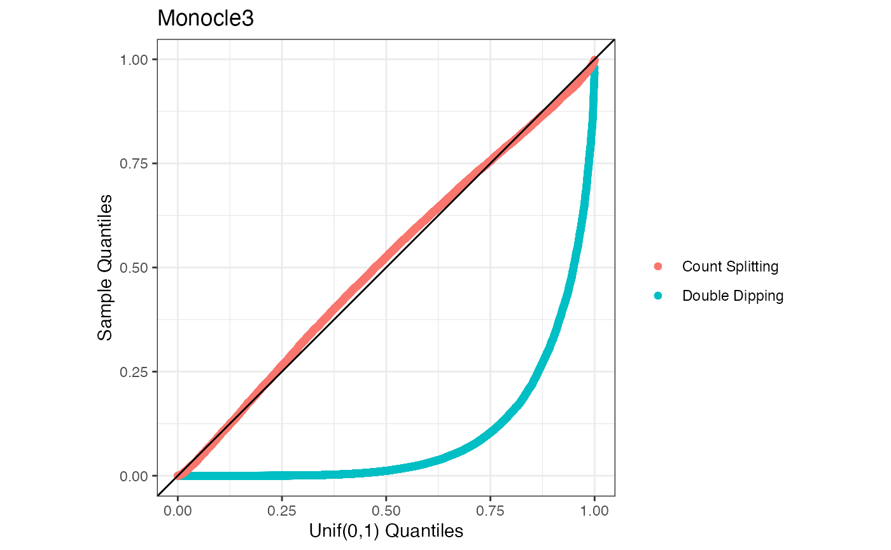
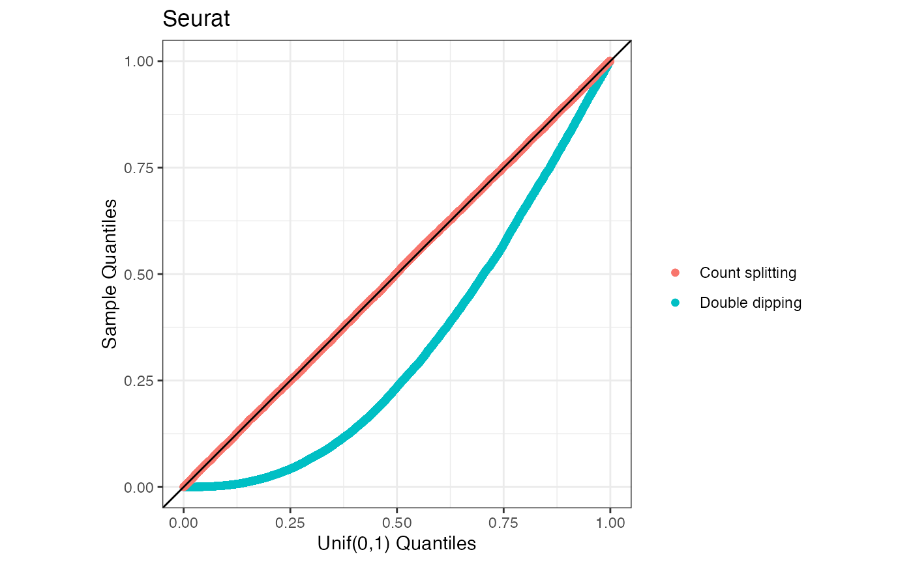

vignettes/demonstrating_problem.Rmd
demonstrating_problem.RmdThis vignette provides the code needed to reproduce Figure 7 in Appendix A of our paper. The purpose of this figure is to show that the computational pipelines suggested in the and vignettes lead to inflated Type 1 error rates on very simple simulated datasets where there is no true differential expression.
The “computing pseudotime” section of the Monocle3 vignettes shows the functions preprocess_cds(), reduce_dimension(), cluster_cells(), learn_graph(), and order_cells() all to a certain cell_data_set object in order to compute pseudotime. Later, the “finding genes that change as a function of pseudotime” section applies graph_test() to this same object. This pipeline, therefore, double dips in the data.
We suggest instead applying preprocess_cds(), reduce_dimension(), cluster_cells(), learn_graph(), and order_cells() all to a training set cell_data_set object in order to compute pseudotime. Then we suggest applying graph_test() to an object that stores this pseudotime but that stores the test set counts.
We illustrate below that our method controls the Type 1 error rate while the method that double dips does not. We work in the sitting of a very simple dataset where \(X_{ij} \sim \mathrm{Poisson}(5)\) for all genes and all cells.
library(monocle3)
library(tidyverse)
library(countsplit)
n=500
p=200
n_trials <- 100
pvals_graph_test_doubledip <- matrix(NA, nrow=n_trials, ncol=p)
pvals_graph_test_countsplit <- matrix(NA, nrow= n_trials, ncol=p)
for (i in 1:n_trials) {
print(i)
set.seed(i)
### A gene-by-cell matrix because that is what Monocle3 expects.
X <- matrix(rpois(n*p, lambda=5), nrow=p)
colnames(X) <- paste("cell", 1:n, sep="")
rownames(X) <- paste("gene", 1:p, sep="")
cs <- countsplit(X)
Xtrain <- cs$train
Xtest <- cs$test
# Create Monocle3 objects
cds <- new_cell_data_set(X)
cds_train <- new_cell_data_set(Xtrain)
##### Naive method.
## Pre-processing and pseudotime estimation
cds <- preprocess_cds(cds)
cds <- reduce_dimension(cds)
cds <- cluster_cells(cds)
cds <- learn_graph(cds)
cds <- order_cells(cds, root_cells="cell1")
## Differential expression testing.
pvals_graph_test_doubledip[i,] <- graph_test(cds, neighbor_graph="principal_graph", cores=4)$p_value
#### Count splitting
## Pre-processing and pseudotime estimation
cds_train <- preprocess_cds(cds_train)
cds_train <- reduce_dimension(cds_train)
cds_train <- cluster_cells(cds_train)
cds_train <- learn_graph(cds_train)
cds_train <- order_cells(cds_train, root_cells="cell1")
### Create a new object that is a copy of cds_train. It therefore stores the
### correct graph and pseudotime.
### But we update the counts attritube such that it stores the test set counts.
cds_test <- cds_train
counts(cds_test) <- Xtest
### Now compute count splitting p-values.
pvals_graph_test_countsplit[i,] <-graph_test(cds_test, neighbor_graph="principal_graph", cores=4)$p_value
}Now that we have carried out the simulation study, we make a uniform QQ-plot of the results.
ggplot(data=NULL)+
geom_qq(aes(sample=as.numeric(pvals_graph_test_doubledip), col="Double Dipping"), distribution="qunif")+
geom_qq(distribution="qunif", aes(sample=as.numeric(pvals_graph_test_countsplit), col="Count Splitting"))+
geom_abline()+
coord_fixed()+
labs(col="")+theme_bw()+
xlab("Unif(0,1) Quantiles")+
ylab("Sample Quantiles")+ggtitle("Monocle3")
We now carry out the same analysis for . The guided clustering tutorial shows the functions and being applied to the same dataset, which is double dipping. In the code below, we demonstrate that double dipping leads to an inflated Type 1 error rate while count splitting allows us to avoid this.
library(Seurat)
n=500
p=200
n_trials <- 100
pvals_doubledip <- matrix(NA, nrow=n_trials, ncol=p)
pvals_countsplit <- matrix(NA, nrow= n_trials, ncol=p)
for (i in 1:n_trials) {
print(i)
set.seed(i)
X <- matrix(rpois(n*p, lambda=5), nrow=p)
colnames(X) <- paste("cell", 1:n, sep="")
rownames(X) <- paste("gene", 1:p, sep="")
ep=0.5
Xtrain <- apply(X, 2, function(u) rbinom(length(u), u, ep))
Xtest <- X - Xtrain
colnames(Xtrain) <- paste("cell", 1:n, sep="")
rownames(Xtrain) <- paste("gene", 1:p, sep="")
colnames(Xtest) <- paste("cell", 1:n, sep="")
rownames(Xtest) <- paste("gene", 1:p, sep="")
### CREATE SEURAT OBJECTS FOR BOTH.
cds <- CreateSeuratObject(X)
cds_train <- CreateSeuratObject(Xtrain)
cds <- ScaleData(cds)
cds <- RunPCA(cds, features=rownames(X))
cds <- FindNeighbors(cds , dims = 1:10)
cds <- FindClusters(cds, resolution = 1)
if (length(unique(Idents(cds)))>1) {
pvals_doubledip[i,] <- FindMarkers(cds, ident.1 = 1, ident.2 = 2, min.pct=0, min.cells.feature=0,
min.cells.group=0,
logfc.threshold=0)$p_val
}
cds_train <- ScaleData(cds_train)
cds_train <- RunPCA(cds_train, features=rownames(X))
cds_train <- FindNeighbors(cds_train , dims = 1:10)
cds_train <- FindClusters(cds_train, resolution = 1)
cds_train[['test']] <- CreateAssayObject(counts=Xtest)
cds_train <- NormalizeData( cds_train , assay="test")
cds_train <- ScaleData( cds_train , assay="test")
if (length(unique(Idents(cds_train)))>1) {
pvals_countsplit[i,] <- FindMarkers(cds_train, ident.1 = 1, ident.2 = 2, min.pct=0, assay="test", min.cells.feature=0,
min.cells.group=0,
logfc.threshold=0)$p_val
}
}
ggplot(data=NULL)+
geom_qq(aes(sample=as.numeric(pvals_doubledip), col="Double dipping"), distribution="qunif")+
geom_qq(distribution="qunif", aes(sample=as.numeric(pvals_countsplit), col="Count splitting"))+
geom_abline()+
coord_fixed()+
labs(col="")+theme_bw()+
xlab("Unif(0,1) Quantiles")+
ggtitle("Seurat")+
ylab("Sample Quantiles")
There is nothing inherently wrong with the functions graph_test() or FindMarkers()– they just should not be applied to the same data as order_cells() or FindClusters().